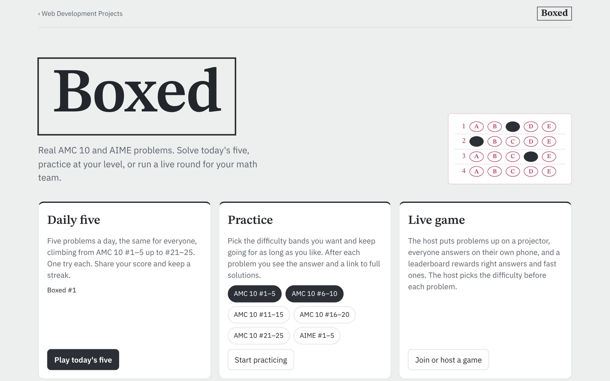
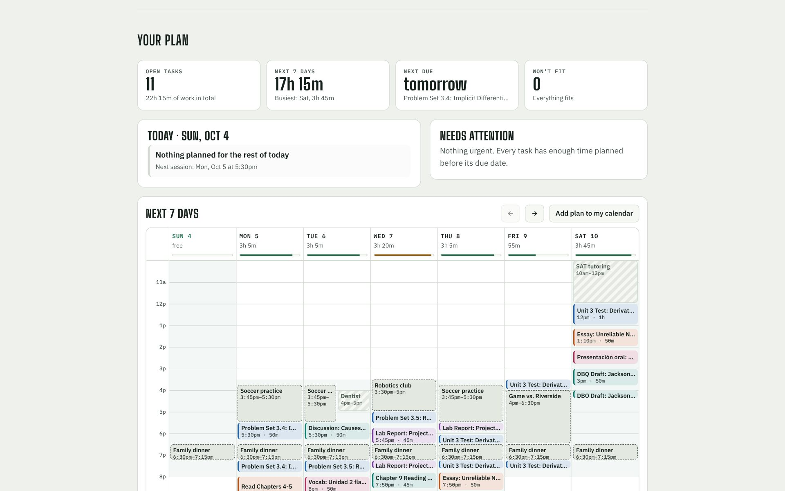
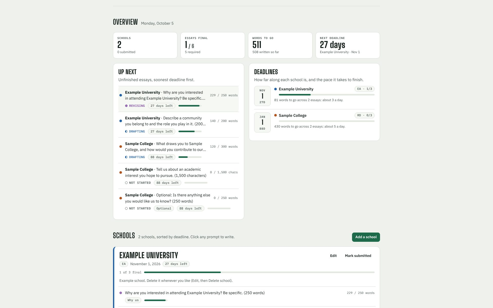

2 projects · web applications
Web Development Projects
A live market simulation for classrooms and a competition-math practice platform, both built for a whole room at once.
ASCoding
Vehicles, satellites and hardware designed in CAD with interactive 3D models, alongside web applications built for classrooms and study.
Every part designed in CAD, with the physics worked out: a road car whose wheels swing up into ducted rotors so it can fly, a radar satellite that watches ports through cloud, a floor mat that turns footsteps into electricity, and the circuits for a two-wheel robot.
See all engineeringBuilt for real-time use in classrooms and for planning schoolwork.

A live market simulation for classrooms and a competition-math practice platform, both built for a whole room at once.


A planner that turns Canvas assignments into a schedule, and a tracker for college supplemental essays.
Looking for the games?